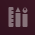

Unity Lenses
Dieser Artikel wurde für die folgenden Ubuntu-Versionen getestet:
Ubuntu 14.04 Trusty Tahr
Zum Verständnis dieses Artikels sind folgende Seiten hilfreich:
 Das Suchen nach Programmen und Dateien erfolgt unter Unity über Lenses. "Lenses" bedeutet in diesem Kontext so viel wie "Suchlinse" oder "Suchlupe". Unity bringt in der Grundinstallation bereits einige Lenses mit, weitere lassen sich über die Paketquellen nachinstallieren.
Das Suchen nach Programmen und Dateien erfolgt unter Unity über Lenses. "Lenses" bedeutet in diesem Kontext so viel wie "Suchlinse" oder "Suchlupe". Unity bringt in der Grundinstallation bereits einige Lenses mit, weitere lassen sich über die Paketquellen nachinstallieren.
Installation¶
Wie bereits in der Einleitung erwähnt, sind einige Lenses bereits in der Grundinstallation von Ubuntu enthalten und brauchen nicht nachinstalliert zu werden. Die Paketnamen folgen alle dem Namensschema unity-lens-XXX, wobei dann XXX der Name der jeweiligen Lens ist. Die Anzahl der verfügbaren Lenses kann vom Ubuntu-Version zu Version variieren.
Standardmäßig sind folgende Lenses vorinstalliert:
unity-lens-applications
unity-lens-files
unity-lens-music
unity-lens-video
unity-lens-photos ()
unity-lens-gwibber ()
unity-lens-shopping (siehe auch Shopping-Lens)
 mit apturl
mit apturl
Paketliste zum Kopieren:
sudo apt-get install unity-lens-applications unity-lens-files unity-lens-music unity-lens-video unity-lens-photos unity-lens-gwibber unity-lens-shopping
sudo aptitude install unity-lens-applications unity-lens-files unity-lens-music unity-lens-video unity-lens-photos unity-lens-gwibber unity-lens-shopping
Nutzung¶
Standard-Lenses¶
Unity enthält die standardmäßig folgenden Lenses:
| Unity Lenses | ||
| Symbol | Name | Funktion |
| Home | sucht nach allem, also Programmen, Musikdateien, Dokumenten etc. | |
|  | Applications | sucht nur nach installierten Programmen bzw. Applikationen |
| Files | sucht nach Dateien und Dokumenten | |
| Music | sucht nach Audiodateien | |
| Video | sucht nach Videodateien | |
| Photo | sucht nach Fotos (erst ab Ubuntu 12.10) | |
| - | Gwibber | durchsucht Streams in Gwibber (erst ab Ubuntu 12.10) |
Shopping-Lens¶
Mit Ubuntu 12.10 wurde die kontrovers diskutierte unity-lens-shopping in die Standardinstallation eingeführt und standardmäßig aktiviert. Diese "lens" besitzt kein eigenes Symbol in der Dash. In der Voreinstellung sendet diese Software, sofern sie nicht manuell deaktiviert wurde, alle in der Dash eingegebenen Suchbegriffe (z.B. benutzte Programme, Dateien, Kontakte, ...) an einen Server von Canonical. Die gefilterten Suchbegriffe werden dann an Amazon weitergeleitet und zusätzlich zu den lokalen Suchtreffern werden Ergebnisse einer entsprechenden Suche im Online-Shop von Amazon  bei den Ergebnissen angezeigt.
bei den Ergebnissen angezeigt.
Einen Überblick über die wichtigsten Kritikpunkte enthält z.B. der Blog-Artikel Ubuntu Spyware: What to do?  von Richard Stallman (Übersetzung im Forum). Mark Shuttleworth, der Mentor Ubuntus, antwortete darauf in einem eigenen Blog-Artikel (siehe auch Canonical’s privacy policy ). Im Oktober 2013 wurde er deswegen mit dem Big Brother Award Austria in der Kategorie "Kommunikation und Marketing" ausgezeichnet.
von Richard Stallman (Übersetzung im Forum). Mark Shuttleworth, der Mentor Ubuntus, antwortete darauf in einem eigenen Blog-Artikel (siehe auch Canonical’s privacy policy ). Im Oktober 2013 wurde er deswegen mit dem Big Brother Award Austria in der Kategorie "Kommunikation und Marketing" ausgezeichnet.
Wer diese Funktion nicht benötigt oder die Übertragung der Daten als Eingriff in die Privatsphäre ansieht, der kann die Shopping-Lens auf verschiedenen Wegen deaktivieren: entweder durch die Deinstallation des oben genannten Pakets oder durch eine Deaktivierung unter "Systemeinstellungen -> Privatsphäre -> Suchergebnisse -> Online-Suchergebnisse".
Falls man diese Funktion prinzipiell ganz nützlich findet, aber selbst die Kontrolle behalten möchte, wann Informationen an Canonical und angeschlossene Partner übermittelt werden, dann ist das Programm Privacy Indicator interessant. Hiermit lässt sich die Übermittlung von Informationen gezielt mit einem Mausklick an- bzw. abschalten. Einziges Manko: dieses Programm steht nicht für jede Ubuntu-Version zur Verfügung.
Ab Ubuntu 13.10 werden SmartScopes eingesetzt. Um diese zu deaktivieren, geht man über den dconf-editor in das Schema "com → canonical → Unity → Lenses" und fügt folgendes in den Schlüssel "disabled-scopes" ein:
['more_suggestions-amazon.scope', 'more_suggestions-u1ms.scope', 'more_suggestions-populartracks.scope', 'music-musicstore.scope', 'more_suggestions-ebay.scope', 'more_suggestions-ubuntushop.scope', 'more_suggestions-skimlinks.scope']
Bevorzugt man den Weg über ein Terminal, führt man folgenden Befehl einmal aus:
gsettings set com.canonical.Unity.Lenses disabled-scopes "['more_suggestions-amazon.scope', 'more_suggestions-u1ms.scope', 'more_suggestions-populartracks.scope', 'music-musicstore.scope', 'more_suggestions-ebay.scope', 'more_suggestions-ubuntushop.scope', 'more_suggestions-skimlinks.scope']"
Zum Aktivieren der Einstellung muss man sich von der grafischen Oberfläche ab- und wieder neu anmelden. Nun wird eine lokale Suche nicht mehr weitergeleitet.
TV-Browser Lens¶
Auch für das digitale Fernsehprogramm gibt es eine Lens: TV-Browser Lens.
Eigene Lenses erstellen¶
Eine detaillierte Anleitung inklusive Beispielen bietet die Anleitung Writing a scope .
Problembehebung¶
Eventuell kann es vorkommen, dass die Suche keine Dateien findet. Man schaut im Terminal nach, ob diese beiden Pakete installiert sind, bzw. installiert sie erneut:
apt-get install --reinstall unity-lens-applications unity-lens-files
Danach ab- und anmelden oder noch besser neustarten. Dann werden wieder Suchergebnisse angezeigt.
Es kann auch weiterhelfen, den gesamten Ordner ~/.local/share/zeitgeist/ zu löschen (siehe Zeitgeist)
Links¶
Amazon Suchergebnisse in der Unity-Dash - Ikhaya, 09/2012
Fix Ubuntu
- die Übermittlung der die Privatsphäre verletzender Informationen abschaltenUnity
 Übersichtsseite zur Standard-Desktopoberfläche ab Ubuntu 11.04
Übersichtsseite zur Standard-Desktopoberfläche ab Ubuntu 11.04
- Erstellt mit Inyoka
-
 2004 – 2017 ubuntuusers.de • Einige Rechte vorbehalten
2004 – 2017 ubuntuusers.de • Einige Rechte vorbehalten
Lizenz • Kontakt • Datenschutz • Impressum • Serverstatus -
Serverhousing gespendet von